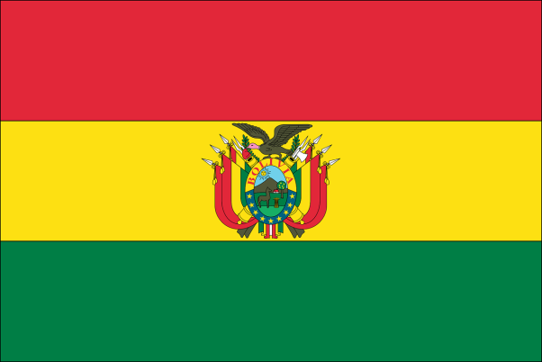
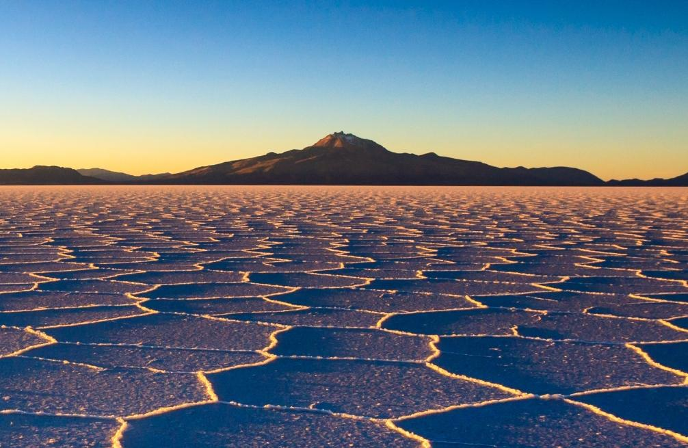

La Bolivie, en forme longue l'État plurinational de Bolivie, en espagnol Bolivia et Estado Plurinacional de Bolivia, en quechua Bulibiya et Bulibiya Mama llaqta, en aymara Wuliwya et Wuliwya Suyu, en guarani Volívia et Tetã Volívia, est un pays enclavé d'Amérique du Sud entouré par le Brésil, le Paraguay, l'Argentine, le Chili et le Pérou.
La Bolivie est une république démocratique, divisée en neuf départements. Sa géographie est variée, comprenant des territoires de la Cordillère des Andes, de l'Altiplano, de l'Amazonie et du Gran Chaco. Le taux de pauvreté est d'environ 39%4. Les principales activités économiques sont l'agriculture, la sylviculture et la pêche, les produits manufacturiers, comme le textile, l'habillement, les métaux raffinés, et le pétrole raffiné. La Bolivie est ainsi très riche en métaux comme l'étain, l'argent, ou encore le lithium.
Cliquez ici
@ Site made by JB